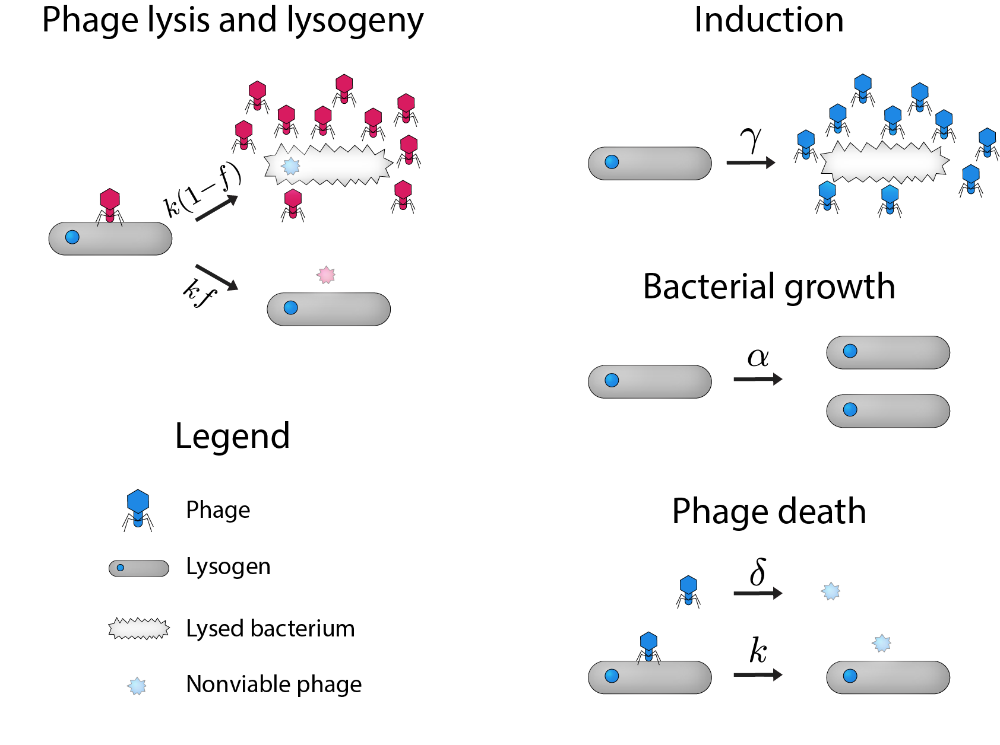

Why do we see diverse phage coexisting?
Viruses don’t only infect people. There are also many viruses that infect bacteria. These are called “phage”, which is short for “bacteriophage”, meaning “bacteria eaters” (from Greek). Phage have been studied now for over 100 years, and they have a reasonable claim to being the most abundant organisms on earth. Phage and bacteria have been at war with each other for eons, and the discovery of phage and bacterial armaments in this war has been enormously impactful for modern biology – for example, you may have heard of the CRISPR system which is being used for genome editing; this system was evolved by bacteria as a method to identify and destroy invading phages. Bacteria put up a lot of defenses against phage because often, when a phage invades, it’ll replicate itself many times over, kill the bacterial cell, and release all these new phage into the environment (this process is called “lysis”).
But in addition to warfare, bacteria and phage actually rely on one another to survive. Many phage, when they invade a bacterial cell, don’t kill the bacterium, but rather integrate their genome into that of the bacterium and replicate along with it (this process is called “lysogeny”). And bacteria often end up relying on these lysogenic phage because a bacterium that has been lysogenized (called a “lysogen”) is generally immune to infection and to lysis by the same kind of phage that now resides in the bacterium.
You may wonder why a phage would bother lysogenizing the bacterium if phage replicate mostly through lysis. Indeed, there have been several decades of study on when lysis or lysogeny is optimal for the phage. The answer is that if there aren’t many bacteria around, if the phage were to perform lysis there wouldn’t be new bacteria for the new phage to infect. So the phage instead performs lysogeny, and then bides its time and replicates along with the bacterial cell. Then, at some later generation, it may perform lysis (if you're curious about the jargon, that process is called “induction”).
Because bacteria do so much to combat phage infections, you might expect that only the most “optimal” phage survive to infect bacteria (this is the concept of "survival of the fittest"). This is why so much work has been done to model what combination of lysis and lysogeny is most optimal for phage in a certain environment. But in nature, phage that only perform lysis (“obligate lytic” phage) and phage that perform some mixture of lysis and lysogeny (“temperate” phage) can often prey on the same bacteria and coexist in the same environment. In this paper, we sought to understand how these diverse phage can coexist if one is more optimal than the other.
We found that even though one phage or another might be optimal and “win” in a one-on-one competition, when we model a community of phage and their lysogens, we see coexistence of phage as the norm. This coexistence is mediated by chaotic dynamics of the phage and bacterial populations. Chaotic dynamics are a form of continual dynamics that are different from oscillations. While oscillatory dynamics repeat on a regular cycle (leading to well-defined periods and amplitudes), chaotic dynamics are aperiodic.
We furthermore find a form of “bet-hedging” behavior on the part of the phage, in that obligate lytic phage are typically dominant over their temperate cousins, but are also at a higher risk of going extinct. We found that that risk is mitigated by having larger communities. In fact, more competition between different phage leads to more coexistence, rather than the other way around.